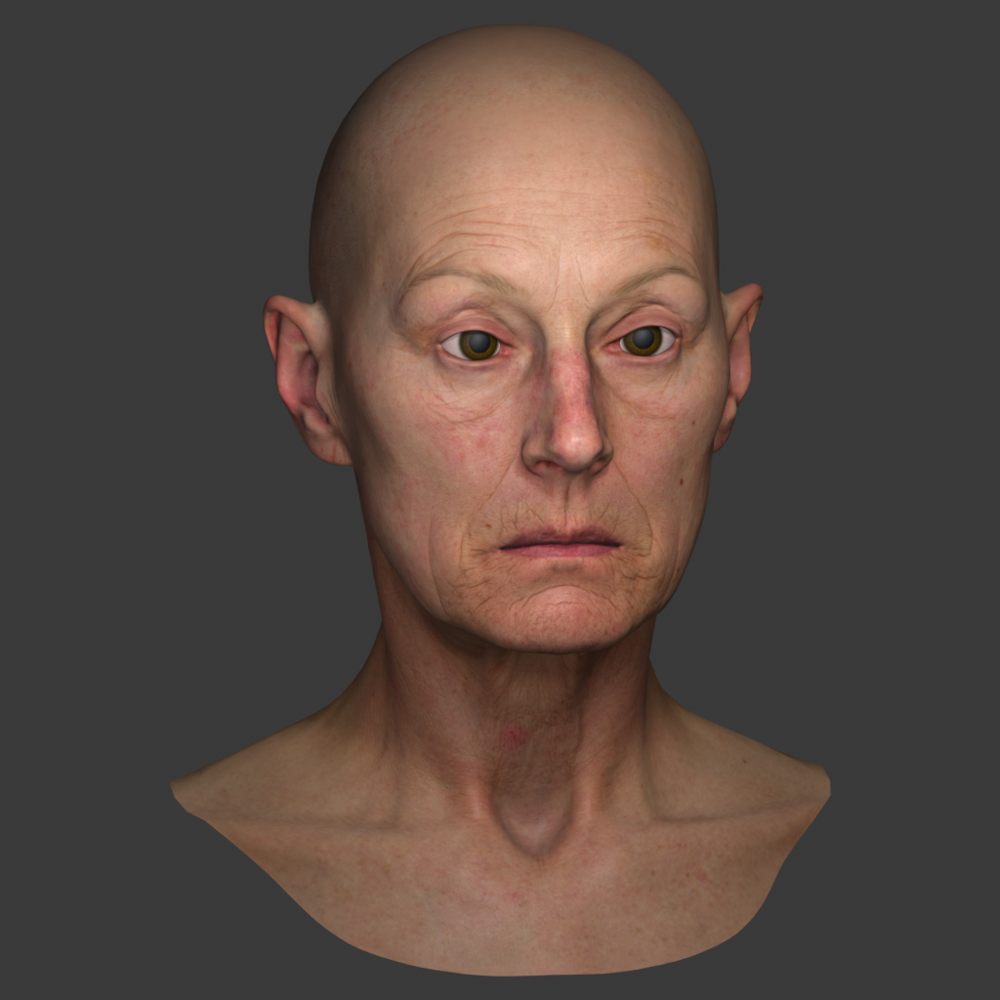

Face Contour Lab
Design preview
fbx_2d_pbr_clean_1915
Local folder project
Saved to folder
demo
File
⌄
Exit project
Save failed — example state.
Keep working here until the file is safe.
Retry save
Download backup
Initialize
Edit points
Transform
Redraw section
New contour
Undo
Redo
Contours
−
100%
+
Fit
Editing
right eye
+ Add point
Delete point
Move · Resize · Rotate
Apply
Cancel
Other arc
Label
face outline
left eye
right eye
nose
mouth
Closed region
Double-click line to add · Drag point to move
0_00000 / pose_00_sample_00 /
pbr.png
1024 × 1024

Right-drag to pan · Scroll to zoom
Illustrative contours
Annotation files
Save now
Download current JSON
Restore current JSON
Preview save error
Selected contour
Delete contour
Image queue
Demo navigation
01
pose_00_sample_00 / pbr.png
02
Sample image 2
03
Sample image 3
Navigation changes the preview counter only.